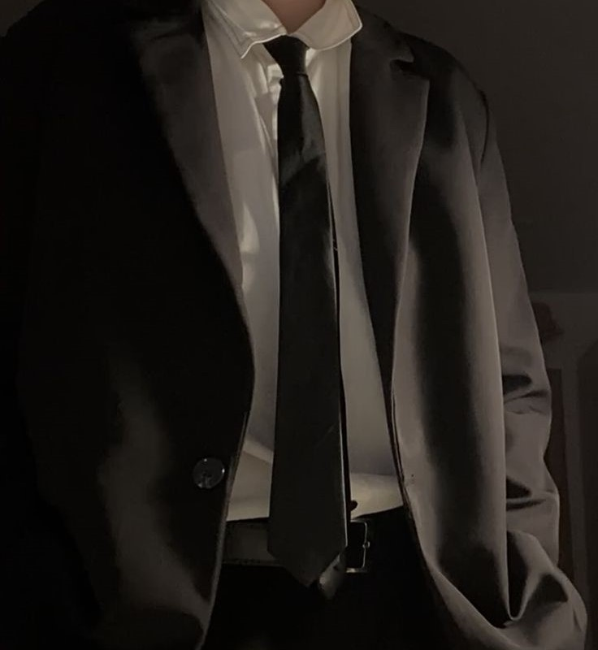

-INTRODUCTION-
My name is Nash. I already surpassed my 20th birthday. Not having any good hobbies other than sleeping through the day. I’m the third child from my four siblings, not having any medals like them to be proud of but for now, I’m still satisfied with what I can do and have. Currently in a relationship. We hardly take pictures together so to show him would be hard. This is the only picture I could provide because he's too shy he said lol. I’m happy with him so I don’t really mind.I mean he's kind to me even though he could be mean sometimes with his jokes and wordings, he still there when I need them and that is good enough for me.
-THE STORY OF MY LIFE-
I was born in Kuala Lumpur but raised in Selangor because my parents
thought that it would be better to raised me in the environment that promotes humility.
My parents sent me to many kinds of kindergarten but honestly, I skipped them because
I couldn't understand others joke and not really into playing around. Books was my best
friend and my tutors, but it doesn’t mean that I didn’t have an actual teacher she was kind
and nice to me, she was the one that suggested me to stay in her house and study personally
with her. It worked actually; I got first place in our monthly exam in the kindergarten
because of it. I want to show her picture but, out of respecting her privacy I rather not.
 Then again, to enter primary school year was a real hardship to me because I didn’t know
how to have fun like normal people does. I questioned many things at that time, and it did
hurt my heart a bit. I wanted a friend, but I couldn't get any, so my parents sent me to a
religious school in Klang but then again. It didn’t work out well. I got bullied and sometimes
beaten. I was fine though because for me, I could just choose to be a little wilder but yeah,
the idea of being a hypocrite made me sad. So, I just let them do what they wanted.
Then again, to enter primary school year was a real hardship to me because I didn’t know
how to have fun like normal people does. I questioned many things at that time, and it did
hurt my heart a bit. I wanted a friend, but I couldn't get any, so my parents sent me to a
religious school in Klang but then again. It didn’t work out well. I got bullied and sometimes
beaten. I was fine though because for me, I could just choose to be a little wilder but yeah,
the idea of being a hypocrite made me sad. So, I just let them do what they wanted.
After that, I got into
school in Shah Alam and finally made some friends. They were the best, really. I couldn’t ask
for more, but I guess it was time for me to feel a little bit happy, so God gave me some good friends
along the way. I learnt a lot; I felt a lot and I tried to change to be a little more
normal like I should be. it was hard at first, but I got better at acting as one so, I’m glad that
it all paid off well. Yet, it went downfall in form 4. I didn’t get to pursue the stream that I wanted,
and I was falling behind because of a tragedy. It broke my heart and my mind until where I am now.
Truthfully talking, I’m not so well anymore. I couldn’t comprehend jokes and started to have fight
with several people for being too sad. I tried and tried again until I can stand back up but, it
didn’t work out well. I kept being stuck and hurt by many things sometimes I felt like I’m a burden.
Now I’m in my last choice of university, I’ve met with many kinds of people but not too various in
personalities. I met my boyfriend and tried to be a little better for him and my groupmates here.
I want them to able to enjoy their lives without worrying about me, so I have to do my best. Please
pray for my journey and thank you for your time.